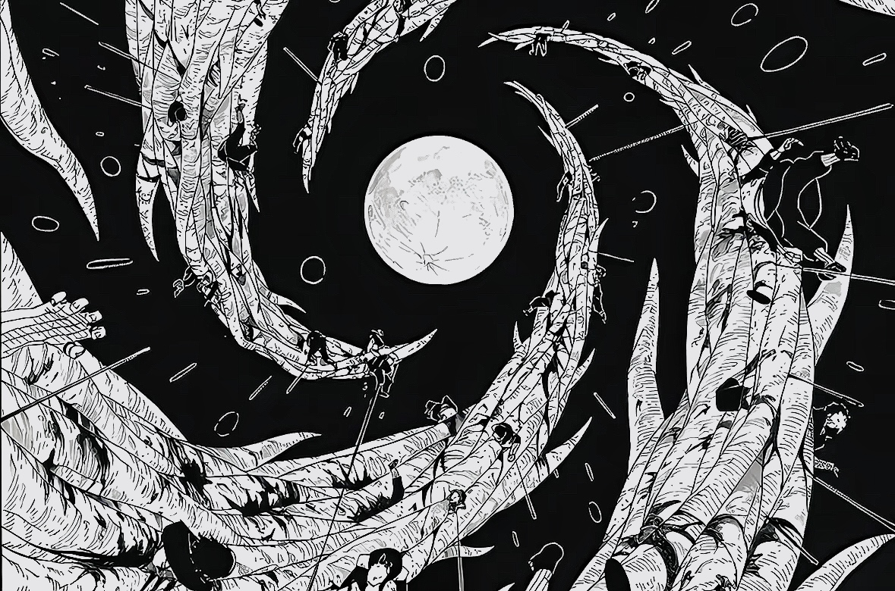

個人介紹
專業技能
工作經歷
吳紘在
中原大學-企業管理學系
雙主修-資訊管理學系
# 關於我
為了守護自由而捨棄自由
# 標籤
＃希望轉系成功
＃生日0111
＃喜歡火影忍者
＃以後想做遊戲開發
＃好想睡覺
＃努力考研
程式能力
Python
CSS
Java
C++

HTML
JavaScript
專業能力
Macroeconomics
99%
Microeconomics
99%
big data
85%
Marketing Management
86%
Accounting or Accountancy
90%
工作經歷
這裡填入你的經歷。